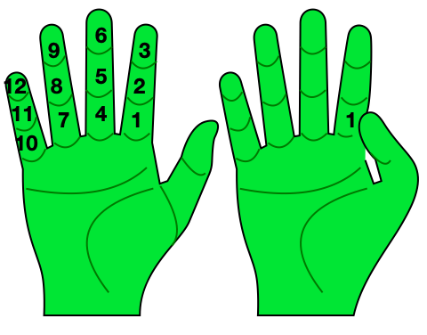
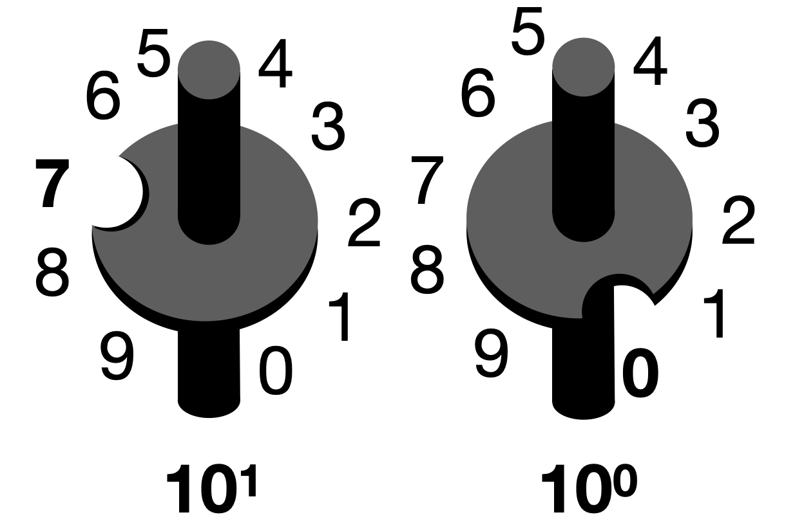
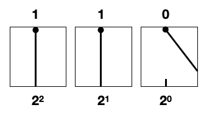
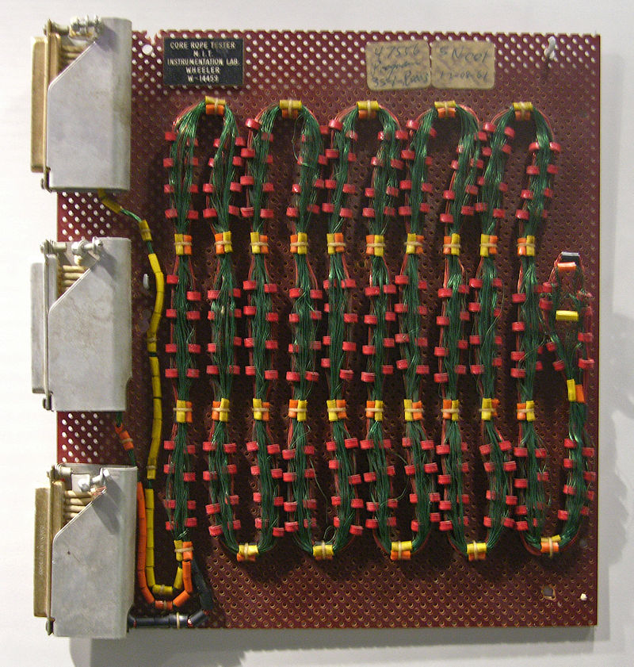

History of Counting
Numbers on the body
Since humans first walked the earth, we've sought to understand our environment. Anthropologists believe that counting developed alongside language in early hominids. Early artifacts of stone and bone show hatch marks which appear to denote quantities.

In each culture, a different way of counting developed. In most of Europe, Asia, and some parts of the Americas,
people counted their fingers and thus worked in base 10. In our modern culture this leads to complication when
dealing with time and angles which operate against 12, 60, and 32. Early mathematical scholars in Northern
Africa and the Middle East counted in units of 12, pressing their thumbs to each joint in the fingers rather
than raising their fingers one by one.
These mathmaticians divided the sundial into 12 units (the other 12 being units of darkness) to give us the 24 hour day. The circle was counted with 30 units of 12, making 360.
In two of great empires of the Americas, the Maya and Aztec counted both their fingers and their toes - leading to base 20. Each month in both civilizations was divided into groups of 20 days, and had a cyclical ritual timeline of 260 days (20*13) where each month was ruled over by a specific diety. Years however were divided up into 365 days to correspond to the cyclical patterns of seasons, day length, and celestial movements. These civilizations also independently discovered and used the number 0 in their calculations, perhaps being the first to do so.

A quipu, image via wikimedia
commons
{kind=link}
Tragically the histories of these civilizations was purposefully destroyed by European colonists. The quipus and codexes burned, the aztec stonework demolished.
It took centuries after this cultural purge for Eurpean archeologists to recognize that the carved stonework of the aztecs represented meaningful information rather than arbitrary images. It took yet another century to realize their writing was phonetic - like the english alphabet - and that the complex figures depicting letters were elaborate creative motifs, not unlike the array of fonts and illuminated manuscripts of europe.
We will never recover the full extent of what these peoples saught to record to history, aside from what we continue to uncover from their artifacts, and the legacy protected and carried forward by those of us who count themselves as their decendants.
Encoding numbers, and early digital computers

The number 70 depicted in base 10 gears, (7x10^1) + (0x10^0)
The quipu was one of many systems humans have developed to assist in counting and calculation which extend
beyond the body - such as the soroban, abacus, slide rule, counting cloth, and cuneiform. The familiar
Hindu-Arabic numeral system (0-9) allows for incredible ease in calculation through writing (unlike roman
numerals).
Early attempts at general purpose computers saught to represent base 10 numbers in mechanical devices, requiring aligned systems of gears on powers of 10. Babbage's analytical engine used this layout, and paid the price for it. All of these gears required specialized hand-craftsmanship. They often locked up and fell out of sync. The complication and cost proved too much for the analytical engine to be built.

The number 5 represented in base 2 switches, (1x2^2) + (1x2^1) + (0x2^0)
The Zuse computer's base 2 operation was able to rely instead on single units either being in one state or another. This could be represented with something as simple as an on-off switch - an incredible step towards simplicity in mechanical design.

A Torsion Wire Delay Line, image via wikimedia
commons
{kind=link}

Potentially the oddest encoding of binary was the guitar string. A twist of the wire would represent a 1,
and an un-twist as a 0. These and the mercury tubes actually served as a specific kind of computer memory called
"delay line", which would store data for a specific duration of time - the duration being dictated by the
medium, such as length of wire or tubing.
The core rope of the Apollo Guidance System, image via
wikimedia
commons
{kind=link}
Through all of these examples, we can see that the encoding of numbers is arbitrary. It could be a finger, a knot in a string, a gear in a certain position, or a switch. What's important is that a person can both write these numbers into the system of choice, and can also read them back (encoding, and decoding). Once that is possible, an appropriate system of numbers and encoding can be chosen for a given application.
The Selection of Binary encoding for computing opens the doors to complex systems of electricity-based calculations known as 'logic gates', which live throughout computer systems but are densely packed into a part of a CPU known as the "Arithmatic Logic Unit" or ALU (some CPU's may also have multiple ALUs for various purposes). In the next sections, these logic gates and logical units are described in detail.
<- Back to How Do Computers Work